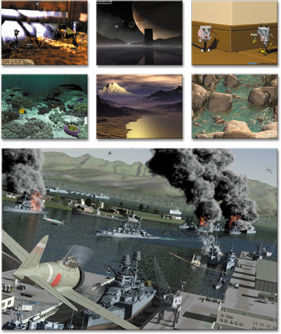

1.9.2 The IRTC CDROM (Year Three)
The IRTC CDROM (Year Three) is a compilation of all entries made to the Internet Raytracing
Competition during its third year of operation. As the IRTC is bi-monthly, this covers round
#13 (May/June 1998) to round #18 (March/April 1999). It also includes rounds 3 through 6
(inclusive) of the IRTC Animations competition. As the animations competition runs every three
months, this means that it includes 15 Apr 1998 - 15 Jul 1998, 15 Jul 1998 - 15 Oct 1998, 15
Oct 1998 - 15 Jan 1999, and 15 Jan 1999 - 15 Apr 1999.

Sample Images from The IRTC CDROM, Year Three
See »http://www.aussie.org/products/
for more information and to order from our secure server.